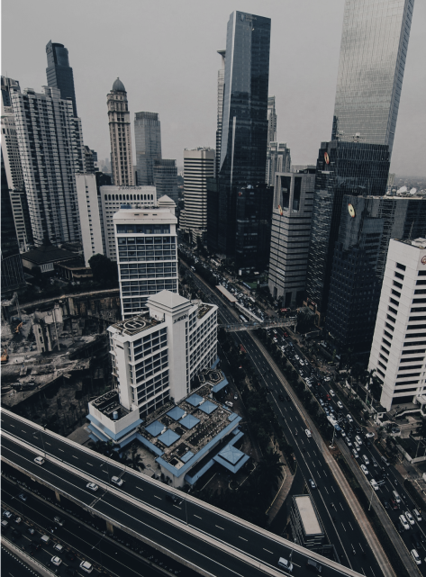

“Developing Tech
With Indonesia Culture”
With Indonesia Culture”


the culture of indonesian adalah platform/wadah masyarakat indonesia dengan tujuan untuk membantu pendidikan,teknologi,dan kebudyaan indonesia agar maju dan berkembang
Semakin berkembangnya teknologi membuat kita wajib untuk mengikuti perkembangan zaman. Untuk itu platform ini hadir untuk memaksimalkan potensi anak bangsa agar memiliki pengetahuan IPTEK yang berbudaya.


Menjadikan Masyarakat di indonesia berwawasan luas,mengikuti perkembangan teknologi secara merata dan memaksimalkan potensi bangsa.